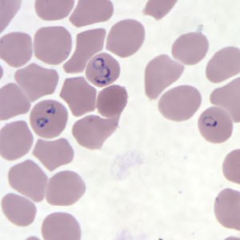

A parasite inside red blood cells.
Malaria is caused by Plasmodium parasites, usually transmitted by infected female Anopheles mosquitoes.

CDC / DPDx · Public domain
One bite. Two major destinations.
After a mosquito bite, parasites first develop in the liver, then infect red blood cells. Blood-stage infection causes illness, including fever and chills, and can contribute to anemia. Severe malaria can rapidly become life-threatening.
At the laboratory bench
We prepare stained thick and thin blood films. A thick film concentrates blood to help find parasites. A thin film preserves red-cell detail to help identify the species and estimate the percentage of infected cells. Rapid antigen tests can help, but microscopy still supplies vital information.
A global disease with local diagnostic importance
Malaria is a major burden in many tropical regions, particularly sub-Saharan Africa. In the U.S., travel history is an important clue. Fever after visiting an area with malaria needs prompt medical assessment—even if the traveler took preventive medication.
Treatment is time-sensitive
The species, severity, place of acquisition, and patient factors guide drug selection. Combination antimalarial medicines treat many uncomplicated infections. Severe disease requires urgent hospital care, usually IV artesunate followed by a full oral course. Some species also require treatment of dormant liver stages.
Is the mosquito the parasite?
The mosquito is the vector—the carrier. Plasmodium is the parasite that causes malaria.
Sources & further exploration
Educational content reviewed October 4, 2026. Photographs show real specimens or research observations; stains and imaging methods affect their appearance. CDC images are available free from CDC. Their use does not imply endorsement by CDC, HHS, or the U.S. Government.